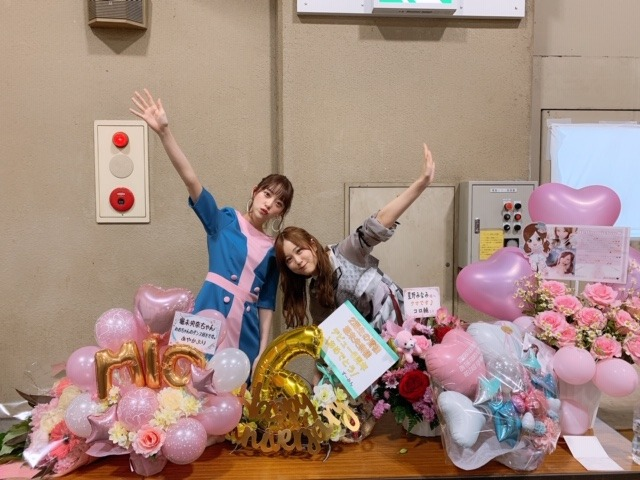

2019/0618Tueまったりいこうよ〜

見事な半目だったので記念に載せます☺︎

福岡と大阪での舞台挨拶、ありがとうございました！
緊張しました。
帰りはずっとマネージャーさんとお仕事の話を語らってました。考えるだけではなく行動していかなくちゃね。
頑張ります！
そしてar発売中ですが皆さん見てくださいましたか？♡
NANAMIちゃんや弘中さんがarみたよ〜可愛かった〜って言ってくれて本当に優しい友達に恵まれました...
撮影は一人なことが多いから、いつか二人ともar一緒に載れたらいいなぁ☺︎
皆さんも是非見てください！


ジョージ。
ギター壊れて直す話、すき。
告知
「東海ウォーカー」
「TVガイドAlpha EPISODE U」
「装苑」
「別冊spoon.」表紙
「シネマスクエア」
「seventeen」
「日経エンタテイメント！」
「プチコミック」
「BOMB」
「FINEBOYS」
「+act. （プラスアクト）」
「ar」初表紙
「TV station」
「ベツコミ」
「Maybe」
「EX大衆」表紙
6/23「アップトゥボーイ」表紙
6/24「週刊ビックコミック スピリッツ」ソロ表紙
今日は楽しみすぎる収録です♪
ふふふ
では☺︎
2019/06/18 10:06
コメント(284)
半目みおなちゃんかわいすぎ〜
未央奈ブログ更新ありがとう〜！
半目でも可愛いね！閉じてる気もするけど笑
福岡、大阪と舞台挨拶お疲れ様でした！もうすぐ公開だね！5回は見るよ！あと岐阜の舞台挨拶行かせてもらいます！
みなみおないいね！2人とも好きだよ！
収録なんだろう？告知待ってますね
最近更新多くて嬉しい
次回も楽しみににしてるね！
では。
半目でも可愛いね！閉じてる気もするけど笑
福岡、大阪と舞台挨拶お疲れ様でした！もうすぐ公開だね！5回は見るよ！あと岐阜の舞台挨拶行かせてもらいます！
みなみおないいね！2人とも好きだよ！
収録なんだろう？告知待ってますね
最近更新多くて嬉しい
次回も楽しみににしてるね！
では。
最初、目を瞑っているのかと思いました。
(^ー^)
(^ー^)
こんばんは。
まったりも必要ですね。
心身の疲れやバランス、大丈夫でしょうか？
いよいよ公開目前で、多岐に渡る仕事で多忙な日々かと心配です。
半目の写真、たまにはこういうのも良いですね。
身近な感じもします。
お人形さんです。綺麗になっていきますね。
癒されます、ありがとうございます。
先日、twitterにａｒ７月号の幻の表紙が掲載されてましたが、あの表紙も良いですね。
でもやはり刊行された表紙が、夏らしく可愛く爽やかで好きです。
楽しみすぎる収録、気になります。
もしかして土曜日の情報番組の映画コーナー？
身体には気をつけて、これからの行動が鍵ですね。
見守ってますよ。
頑張って行きましょう！
まったりも必要ですね。
心身の疲れやバランス、大丈夫でしょうか？
いよいよ公開目前で、多岐に渡る仕事で多忙な日々かと心配です。
半目の写真、たまにはこういうのも良いですね。
身近な感じもします。
お人形さんです。綺麗になっていきますね。
癒されます、ありがとうございます。
先日、twitterにａｒ７月号の幻の表紙が掲載されてましたが、あの表紙も良いですね。
でもやはり刊行された表紙が、夏らしく可愛く爽やかで好きです。
楽しみすぎる収録、気になります。
もしかして土曜日の情報番組の映画コーナー？
身体には気をつけて、これからの行動が鍵ですね。
見守ってますよ。
頑張って行きましょう！
更新ありがとう
楽しみにしてます
楽しみにしてます
雑誌の出演数が凄いですね！
半目だと菩薩様みたいです♪
楽しみ過ぎる収録って、何だろうなぁ？☆
半目だと菩薩様みたいです♪
楽しみ過ぎる収録って、何だろうなぁ？☆
お目目パッチリパチパチ(O_O)の未央奈が半目って
笑ってしまった(^∧^)
舞台挨拶お疲れ様でした
『ホットギミック』
またまた大ヒット祈願
こんにちは
半目写真でまったりしましたよ～笑
でも、顔を近付けたくなっちゃうなー笑
寝顔でも一番可愛いらしいと思います♡
連日の舞台挨拶お疲れ様でした！！
舞台衣装姿は全部がエレガントでした♡
とっても眩しい姿を見て緊張したけど、
より大きな存在感になったと感じます☆
arの表紙はヘップバーンみたいですし、
中ページも可愛いらしさが全開ですね♡
美白だからウサギの姿もお気に入りです！
笑顔の表情で頭の中も真っ白になります♡
みなみちゃんとの写真にも幸せを感じます！
おさるのジョージもとっても幸せそうです♪
告知も多くて嬉しいし、
インタビュー記事は興味深くて、
みおちゃんのグラビアはとっても多彩です♡
今日の収録分もとっても楽しみですよ～☺
半目写真でまったりしましたよ～笑
でも、顔を近付けたくなっちゃうなー笑
寝顔でも一番可愛いらしいと思います♡
連日の舞台挨拶お疲れ様でした！！
舞台衣装姿は全部がエレガントでした♡
とっても眩しい姿を見て緊張したけど、
より大きな存在感になったと感じます☆
arの表紙はヘップバーンみたいですし、
中ページも可愛いらしさが全開ですね♡
美白だからウサギの姿もお気に入りです！
笑顔の表情で頭の中も真っ白になります♡
みなみちゃんとの写真にも幸せを感じます！
おさるのジョージもとっても幸せそうです♪
告知も多くて嬉しいし、
インタビュー記事は興味深くて、
みおちゃんのグラビアはとっても多彩です♡
今日の収録分もとっても楽しみですよ～☺
未央奈ちゃんお疲れ様です。久しぶりのみなみおなのツーショット皆大喜びだと思います。早くみなみちゃんもレコメン水曜日やらじらーサンデーのみなみちゃん担当時に未央奈ちゃんが出演聞きたい。二人で映画出演するなら、どんな映画がいいか未央奈ちゃんに聞いてみたい。シネマピックアップ復活してほしい。二人でのユニット曲がないのが不思議！！秋元先生早く二人のユニット曲やプリン会、塩アイスのユニット曲沢山作って！！お願い!!明日のレコメンも楽しみ！明日は久しぶりにリアルタイムで聞ける (普段は夜間の仕事中、今週と来週の水曜日は休みの予定)沢山の方にホットギミックを通して未央奈ちゃんの魅力をもっともっと知ってほしいなあ‼️次回の乃木坂工事中も楽しみ！絢音ちゃんが他の仕事で２期生が揃ってないのが残念。未央奈ちゃん大好きやおー
更新ありがとう❤
未央奈ちゃん
かわいすぎ～
乃木坂工事中見ました
未央奈ちゃんめだって
嬉しかったです
未央奈ちゃん
かわいすぎ～
乃木坂工事中見ました
未央奈ちゃんめだって
嬉しかったです
堀ちゃん
ブログ更新ありがとー
福岡に舞台挨拶来てたんだね
行きたかった...
女優未央奈も楽しみにしてます！
もうすぐ全国ツアーだね！
福岡公演は絶対行きます
大好きです！！！！
ブログ更新ありがとー
福岡に舞台挨拶来てたんだね
行きたかった...
女優未央奈も楽しみにしてます！
もうすぐ全国ツアーだね！
福岡公演は絶対行きます
大好きです！！！！
未央奈お疲れ様です！
大阪舞台挨拶に参加させていただきました。
あいかわらず、キラキラしていましたよ。ちゃんとネットで検索して画伯の絵もチェックしました！芸術が爆発していました。
内容はネタバレになるのでコメントしませんが、私も映画を月に3本ぐらいは平均してみているのですが、未央奈の演技、とてもスマートで感情動きがよく出ていたと思います！
これからまだまだ取材など忙しいでしょうけど、身体には気をつけて頑張ってくださいね！
上海、いい結果が出ればいいですね！
大阪舞台挨拶に参加させていただきました。
あいかわらず、キラキラしていましたよ。ちゃんとネットで検索して画伯の絵もチェックしました！芸術が爆発していました。
内容はネタバレになるのでコメントしませんが、私も映画を月に3本ぐらいは平均してみているのですが、未央奈の演技、とてもスマートで感情動きがよく出ていたと思います！
これからまだまだ取材など忙しいでしょうけど、身体には気をつけて頑張ってくださいね！
上海、いい結果が出ればいいですね！
ブログ更新ありがとう！
舞台挨拶お疲れ様(o･ω･o)ゝ
まったりいきたいね～
どんな収録なんだろう？
楽しみだね(^^)
舞台挨拶お疲れ様(o･ω･o)ゝ
まったりいきたいね～
どんな収録なんだろう？
楽しみだね(^^)
可愛い♡
未央奈ちゃんブログ更新ありがとう！
半目でも可愛い未央奈ちゃん笑 そのあとの写真との目の大きさのギャップがすごい笑笑
みなみおな〜〜！！！最高すぎる可愛すぎる♡♡
乃木中二期生回みたよー！二期の苦労がすごくて感動した…やっぱり二期生最高！
どこまでも透明で儚い"初恋"の物語。公開まであと10日！
半目でも可愛い未央奈ちゃん笑 そのあとの写真との目の大きさのギャップがすごい笑笑
みなみおな〜〜！！！最高すぎる可愛すぎる♡♡
乃木中二期生回みたよー！二期の苦労がすごくて感動した…やっぱり二期生最高！
どこまでも透明で儚い"初恋"の物語。公開まであと10日！
かわいい～まったり～
未央奈ブログ更新ありがとう！
見事な半目写真も可愛いね。
福岡大阪と遠くまでお疲れ様！
やっぱり主演女優だもの舞台挨拶は緊張するよね。
帰りにお仕事の話を語らう真面目な未央奈も好き。
ar見たよって言ってくれて素敵な友達に恵まれたね。
一緒にarに載ったらいいよね。見てみたいな。
おさるのジョージ僕はちゃんと見たことないんだよね。
今度見てみるね。
今日の楽しみすぎる収録って何だろう？
情報解禁になったら教えてね！
では！
見事な半目写真も可愛いね。
福岡大阪と遠くまでお疲れ様！
やっぱり主演女優だもの舞台挨拶は緊張するよね。
帰りにお仕事の話を語らう真面目な未央奈も好き。
ar見たよって言ってくれて素敵な友達に恵まれたね。
一緒にarに載ったらいいよね。見てみたいな。
おさるのジョージ僕はちゃんと見たことないんだよね。
今度見てみるね。
今日の楽しみすぎる収録って何だろう？
情報解禁になったら教えてね！
では！
未央奈ブログ更新ありがと！！
ar買ったよー！！！！
部屋に飾って毎日表紙眺めてるんだよ！！！
ar買ったよー！！！！
部屋に飾って毎日表紙眺めてるんだよ！！！
ブログ更新ありがと！！✨
握手会でジョージ見ました！！！
握手会でジョージ見ました！！！
またブログ更新してるじゃない、ありがとー
まったり いいねえ、
やっぱまったりするときはまったりしないとね、疲れちゃうよね。
おさるのジョージおもしろいよね、昔よく見た。
今日の収録?なんだろー、気になるー！
次回のブログ楽しみにしてるよ。
バイバイキーン
まったり いいねえ、
やっぱまったりするときはまったりしないとね、疲れちゃうよね。
おさるのジョージおもしろいよね、昔よく見た。
今日の収録?なんだろー、気になるー！
次回のブログ楽しみにしてるよ。
バイバイキーン
半目写真なんだか仏像みたいなので、とりあえず祈っときます。
舞台挨拶お疲れ様でした！
告知～「FINEBOYS」を見させて頂きました。
ホットギミックに対する意気込みや日頃の恋愛観などがわかりました
見させて頂いて、自由な空に高く羽ばたける翼！という言葉がふっと浮かんできました。
自分らしくある事が難しい世の中かもしれませんが、FINEBOYSの伸び伸びしたインタビューを見ていて、自分も元気を頂きました
これからもマイウェイを走り続ける未央奈ちゃんであってほしい、と思いました
告知～「FINEBOYS」を見させて頂きました。
ホットギミックに対する意気込みや日頃の恋愛観などがわかりました
見させて頂いて、自由な空に高く羽ばたける翼！という言葉がふっと浮かんできました。
自分らしくある事が難しい世の中かもしれませんが、FINEBOYSの伸び伸びしたインタビューを見ていて、自分も元気を頂きました
これからもマイウェイを走り続ける未央奈ちゃんであってほしい、と思いました
こんばんは、映画もうすぐ公開ですね。絶対観にいきますよ。
夏休みには、岐阜に行く予定です。感想をコメントで伝えます。
8月24日の全国握手会に参加します。そして、その握手会に、僕の友達を連れて行きます。その友達は、これから乃木坂46を知ろうとしているんです。僕が、少しずつ教えていきます。
乃木坂46のファンが増えるチャンスですし、僕としても嬉しいことなので、他の坂道グループの皆さんを含め、一生のお願いです。是非、その友達を、楽しませてあげてください。僕も、できる限りの事はします。お願いします。
そして、堀ちゃんのレーンに行く可能性が高いです。
よろしくお願いします。
夏休みには、岐阜に行く予定です。感想をコメントで伝えます。
8月24日の全国握手会に参加します。そして、その握手会に、僕の友達を連れて行きます。その友達は、これから乃木坂46を知ろうとしているんです。僕が、少しずつ教えていきます。
乃木坂46のファンが増えるチャンスですし、僕としても嬉しいことなので、他の坂道グループの皆さんを含め、一生のお願いです。是非、その友達を、楽しませてあげてください。僕も、できる限りの事はします。お願いします。
そして、堀ちゃんのレーンに行く可能性が高いです。
よろしくお願いします。
未央奈ちゃん。ブロックありがとう。大阪も来てくれたんやね。
ありがとう！「おおきに」大阪暑いでしょう？美味しいもの、いっぱい食べてね！大阪最近 から揚げ専門店が増えています。からあげ姉妹達は、喜ぶと思います。画像の未央奈可愛い！
ありがとう！「おおきに」大阪暑いでしょう？美味しいもの、いっぱい食べてね！大阪最近 から揚げ専門店が増えています。からあげ姉妹達は、喜ぶと思います。画像の未央奈可愛い！
半目でも可愛いとは天使ですかい！
arまだ、見てないので、絶対見に行きます！
arまだ、見てないので、絶対見に行きます！
堀ちゃん可愛くてファンです！！
未央奈、更新ありがとう
半目、僕の予想を越えて可愛いじゃないですか笑
まったり、いきましょ～
半目、僕の予想を越えて可愛いじゃないですか笑
まったり、いきましょ～
こんばんはお疲れさま✨
久しぶりコメントします✨
今日は俺の誕生日なのだ(笑)
今からステーキ食べるで～✨(笑)
堀ちゃん相変わらずべっぴんさんやね。
写真、夏らしくて良いな。
乃木中見たよ✨
懐かしいね。
高速瞬きまた見たいかな(笑)
来週も続きを楽しみにしてます。
ではではまたね。
体調気をつけてくださいな。
ほなね、堀ちゃん☺
久しぶりコメントします✨
今日は俺の誕生日なのだ(笑)
今からステーキ食べるで～✨(笑)
堀ちゃん相変わらずべっぴんさんやね。
写真、夏らしくて良いな。
乃木中見たよ✨
懐かしいね。
高速瞬きまた見たいかな(笑)
来週も続きを楽しみにしてます。
ではではまたね。
体調気をつけてくださいな。
ほなね、堀ちゃん☺
半目でも可愛い未央奈ちゃん
みなみちゃんとも仲良し。
舞台挨拶お疲れ様
乃木坂工事中でも目立ってたぁー
これからもいろんな番組でも、
目立って欲しいー頑張れ未央奈
応援してるぞー
みなみちゃんとも仲良し。
舞台挨拶お疲れ様
乃木坂工事中でも目立ってたぁー
これからもいろんな番組でも、
目立って欲しいー頑張れ未央奈
応援してるぞー
忙しいと思うのに、ＳＮＳも手を抜かず全力なので本当に堀ちゃんのファンと誇りです！！
忙しいとか言い訳をせず、ちゃんとブログ・モバメも送ってくれて、ありがとう！！
忙しいとか言い訳をせず、ちゃんとブログ・モバメも送ってくれて、ありがとう！！
みなみおなや
堀ちゃん、ブログ更新ありがとう〜
ar見たよー
あまりの可愛らしさに、部屋に飾っています！
東京と神奈川の舞台挨拶、申し込みました！
必ず当て見に行きます！
堀ちゃん、大好きだよー
ar見たよー
あまりの可愛らしさに、部屋に飾っています！
東京と神奈川の舞台挨拶、申し込みました！
必ず当て見に行きます！
堀ちゃん、大好きだよー
堀ちゃん、かわいい〜
ブログ更新ありがとうございます✨
半目だけど仏様のような癒しを頂きました
心持ちはまったり、余裕をもってやっていきたいですね。
ホットギミックHPで新たな動画が公開されたのですね。全部見ました✨
公開まであと１週間ちょっと…楽しみです！
半目だけど仏様のような癒しを頂きました
心持ちはまったり、余裕をもってやっていきたいですね。
ホットギミックHPで新たな動画が公開されたのですね。全部見ました✨
公開まであと１週間ちょっと…楽しみです！
未央奈！
舞台挨拶お疲れ様です！
行けなくて残念でしたが、6.28の公開日にはちゃんと行けるようにします！
遅れても6.29には絶対に観ます！
てか、6.29は観れるはずです笑
この前の名古屋の握手会だったか忘れたけど、真顔で「30回観て」って言われたのを覚えてるので、それに近づけるように努力はしてみます笑
arもちゃんと持ってるよ！
夏な感じが凄く良かったです！
この前の宮城の握手会でもジョージ居たのかな？笑
今日の収録、何なんだろう？
楽しみにしてるよ！
舞台挨拶お疲れ様です！
行けなくて残念でしたが、6.28の公開日にはちゃんと行けるようにします！
遅れても6.29には絶対に観ます！
てか、6.29は観れるはずです笑
この前の名古屋の握手会だったか忘れたけど、真顔で「30回観て」って言われたのを覚えてるので、それに近づけるように努力はしてみます笑
arもちゃんと持ってるよ！
夏な感じが凄く良かったです！
この前の宮城の握手会でもジョージ居たのかな？笑
今日の収録、何なんだろう？
楽しみにしてるよ！
こんにちは‼︎
ブログ更新、ありがとうございます♪
半目、といっても半分も開いていない気もするけど(笑)、半目記念の写真掲載ありがとうございます…‼︎
普通だったら半目の写真なんて嫌がって隠すと思うんだけど、あえて載せるあたりが未央奈らしいですね(笑)。
淡い淡いブルーの衣装も、とっても可愛いです♪
次の写真、白未央奈は、もう定番に可愛い…‼︎
イヤリングにかざした手がまた綺麗。
爪の長さといい、指の細さといい、全体のバランスがとても美しいんだよなあ。
そうそう、1つ前のブログでコメントし忘れてしまったんだけど、淡い淡いピンクのネイル、とっても可愛いですね‼︎
それも、美しい形の爪があってこそ。
すごく上品に見えますよね♪
自分は、手のひらが大きい割に指が短くて。
爪は…なんか足の爪みたい(笑)。
まあ、男性なんで、これでウケが取れるので全然気にしてませんけどね‼︎
母親譲りなので、うちの母はコンプレックスだったろうなあって思います(笑)。
あ、そうそう、二期生特集の乃木中、観ましたよ♪
二期生、苦労が多かったんだなって、改めて思います。
いろんな思いを抱えていただろうし、自分が安易に論じる訳にはいかないなって思うけど…
きっとその地道な努力が二期生らしさを構成していて、ほかの期にはない味になっていると思います。
MCのお勤めも、頑張っていましたね‼︎
なかなか板についていて、カッコよかったですよ♪
楽しみすぎる収録ってなんだろう？
めっちゃ気になる…‼︎
情報解禁、楽しみにしてますね♪
ではでは、また。
明日も未央奈にとっていい1日になりますように♪
ブログ更新、ありがとうございます♪
半目、といっても半分も開いていない気もするけど(笑)、半目記念の写真掲載ありがとうございます…‼︎
普通だったら半目の写真なんて嫌がって隠すと思うんだけど、あえて載せるあたりが未央奈らしいですね(笑)。
淡い淡いブルーの衣装も、とっても可愛いです♪
次の写真、白未央奈は、もう定番に可愛い…‼︎
イヤリングにかざした手がまた綺麗。
爪の長さといい、指の細さといい、全体のバランスがとても美しいんだよなあ。
そうそう、1つ前のブログでコメントし忘れてしまったんだけど、淡い淡いピンクのネイル、とっても可愛いですね‼︎
それも、美しい形の爪があってこそ。
すごく上品に見えますよね♪
自分は、手のひらが大きい割に指が短くて。
爪は…なんか足の爪みたい(笑)。
まあ、男性なんで、これでウケが取れるので全然気にしてませんけどね‼︎
母親譲りなので、うちの母はコンプレックスだったろうなあって思います(笑)。
あ、そうそう、二期生特集の乃木中、観ましたよ♪
二期生、苦労が多かったんだなって、改めて思います。
いろんな思いを抱えていただろうし、自分が安易に論じる訳にはいかないなって思うけど…
きっとその地道な努力が二期生らしさを構成していて、ほかの期にはない味になっていると思います。
MCのお勤めも、頑張っていましたね‼︎
なかなか板についていて、カッコよかったですよ♪
楽しみすぎる収録ってなんだろう？
めっちゃ気になる…‼︎
情報解禁、楽しみにしてますね♪
ではでは、また。
明日も未央奈にとっていい1日になりますように♪
みなみおなもっとみたいー！
みなみおなー！！ずっとだいすき！！
未央奈～
見事な半目ショットでした(笑)
そんな未央奈も可愛いくて好きです
自分にとって未央奈はサイリウムカラーのオレンジよりももっともっと心を温かくしてくれる、そんな存在です生まれてきてくれてありがとう
この前のbltの未央奈のインタビューを読んで、サイリウムの色の事をどうしても言いたくて
未央奈～、好き
見事な半目ショットでした
そんな未央奈も可愛いくて好きです
自分にとって未央奈はサイリウムカラーのオレンジよりももっともっと心を温かくしてくれる、そんな存在です
この前のbltの未央奈のインタビューを読んで、サイリウムの色の事をどうしても言いたくて
未央奈～、好き
みおな、こんばんは。更新ありがとう！ 近況報告ありがとうございます。 舞台挨拶お疲れ様でした！雑誌チェックしてるよ。 では、毎日みおなに良いこと沢山ありますように！ おやすみおな！！
今日も1日お疲れ～
映画の舞台挨拶で福岡と大阪周ったりし、久しぶりの地方での仕事だったね？
未央奈ちゃんにとって関西、九州にも乃木坂
ファンが沢山いて嬉しい気持ちになるね！
映画の舞台挨拶で福岡と大阪周ったりし、久しぶりの地方での仕事だったね？
未央奈ちゃんにとって関西、九州にも乃木坂
ファンが沢山いて嬉しい気持ちになるね！
だいすき
ほんとにだいすき
いつもありがとう
ほんとにだいすき
いつもありがとう
半目？どれどれ～～
舞台挨拶してますかっ！
夢見心地ですかっ！
むにゃむにゃ･･･
え？
食べ物じゃない･･･
とか言ってみる(笑)
フフフ･･･
舞台挨拶してますかっ！
夢見心地ですかっ！
むにゃむにゃ･･･
え？
食べ物じゃない･･･
とか言ってみる(笑)
フフフ･･･
ほっこりしますね♪
相変わらず可愛い
相変わらず可愛い
オー！ まったりいこう～！
楽しみな収録の話をまた聞かせてねー
楽しみな収録の話をまた聞かせてねー
いつも楽しみです！
未央奈ちゃんブログ更新ありがとう。
名古屋のライブ楽しみにしているよ！
そして、愛知でやる全国握手会楽しみにしているよ！
名古屋のライブ楽しみにしているよ！
そして、愛知でやる全国握手会楽しみにしているよ！
未央奈ちゃん、今日も一日お疲れさまです。「
「今日は楽しみすぎる収録です♪」って
なーんだ、なんだ？
それが明らかになるまでの間の楽しみ！
睡眠はしっかりとるんですよ～！
これからも応援しています！！！
「今日は楽しみすぎる収録です♪」って
なーんだ、なんだ？
それが明らかになるまでの間の楽しみ！
睡眠はしっかりとるんですよ～！
これからも応援しています！！！
未央奈ちゃんこんばんは！
半目でもとても癒されます✨
福岡、大阪と舞台挨拶お疲れ様でした。
ホットギミックの公開まであと一週間ちょっとですね！楽しみです！！
身体に気を付けて頑張ってください✨
半目でもとても癒されます✨
福岡、大阪と舞台挨拶お疲れ様でした。
ホットギミックの公開まであと一週間ちょっとですね！楽しみです！！
身体に気を付けて頑張ってください✨


今度握手会で会いに行くね✌️ 体調崩さんように頑張って